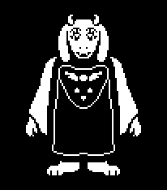
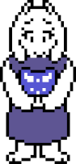
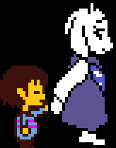
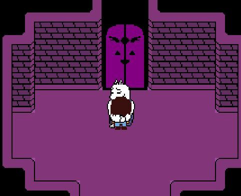

Toriel
é um tipo um monstro maternal a quem se importa realmente para o protagonista e seu bem-estar. Embora em última análise, uma figura maternal, ela tem um lado mais difícil de sua personalidade, como visto em sua tentativa de manter o protagonista nas ruínas, e seu tratamento frio pelo de Asgore.


